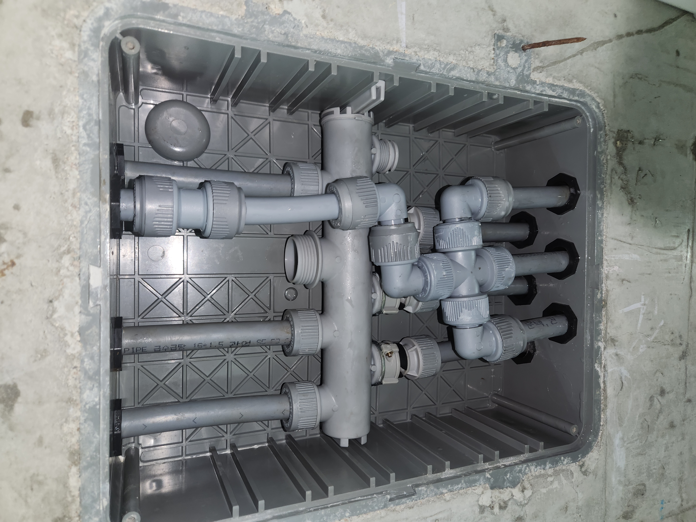

다용도실 벽 아래쪽이 계속 축축하다는 신고를 받고 출동한 현장입니다. 분배기는 보일러나 온수 배관이 각 방과 화장실, 주방으로 갈라지는 지점에 설치되는 장치로, 보통 현관이나 다용도실 벽 안에 매립되어 있습니다.
구조상 눈에 잘 띄지 않다 보니 누수가 진행돼도 한참 뒤에야 발견되는 경우가 많습니다. 분배기함을 열어 내부를 확인해 보니 여러 갈래로 나뉜 배관 중 한 라인의 연결부에서 물이 조금씩 새어 나오고 있었습니다. 하나씩 밸브를 잠가가며 수압 변화를 확인하는 방식으로 문제가 되는 라인을 특정했습니다.
노후된 분배기를 통째로 새 제품으로 교체하고, 각 배관 연결부를 다시 체결한 뒤 밸브를 하나씩 열어가며 모든 라인에 누수가 없는지 재확인했습니다. 교체 후에는 수압을 걸어둔 상태로 일정 시간 지켜본 뒤 이상이 없는 것을 최종 확인했습니다.
다용도실이나 현관 쪽 벽면이 원인 모르게 축축하다면 분배기 누수를 의심해 보셔야 합니다. 겉으로 드러나지 않는 만큼 방치되기 쉬우니 이상 증상이 느껴지시면 빠르게 점검받아 보시길 권해드립니다.
비슷한 증상으로 문의하실 곳을 찾고 계신다면 전화로 접수해 주세요. 접수 건은 확인 후 신속하게 연결해 안내해 드리며, 현장 진단 후 견적에 동의하신 뒤에만 작업이 진행됩니다.